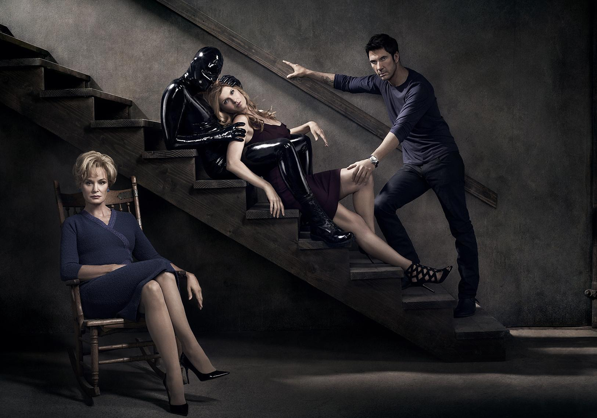

American Horror Story (a veces abreviada como "AHS") es una serie de televisión estadounidense de antología y horror creada por Ryan Murphy y Brad Falchuk para la cadena de cable FX. Cada temporada se concibe como una miniserie autónoma, siguiendo un conjunto diferente de personajes y escenarios, y un argumento con su propio principio, medio y fin. Algunos elementos de la trama de cada temporada están vagamente inspirados en hechos reales